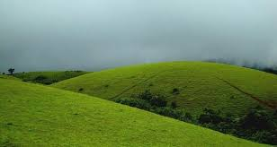
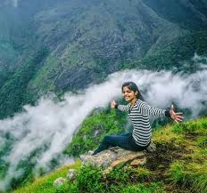
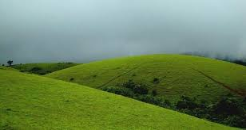
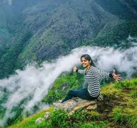

Ooty, also known as Udhagamandalam, is a popular hill station in the Indian state of Tamil Nadu. Located in the Nilgiri Hills, Ooty is known for its breathtaking natural beauty, with lush green forests, rolling hills, and sparkling lakes. The town is famous for its tea plantations, and visitors can take a stroll through the tea gardens to learn about the tea-making process. Ooty is also home to several scenic spots, including the Ooty Lake, Botanical Garden, and Doddabetta Peak, which offers stunning views of the surrounding landscape. With its pleasant climate, picturesque scenery, and rich cultural heritage, Ooty is a must-visit destination for nature lovers and adventure seekers alike.
.jpg) 



Kodaikanal is a charming hill station located in the Dindigul district of Tamil Nadu, India. The town is situated at an altitude of 2,133 meters above sea level, surrounded by the Palani Hills and-valu Lake. Kodaikanal is known for its picturesque landscapes, waterfalls, and scenic trekking trails, making it a popular destination for nature lovers and adventure seekers. The town is also famous for its Kodai Lake, a man-made lake that offers stunning views and boating facilities. With its rich flora and fauna, Kodaikanal is a tranquil retreat from the hustle and bustle of city life, offering a perfect blend of relaxation and adventure.
Vagamon is a scenic hill station located in the Idukki district of Kerala, India. The town is situated at an altitude of 1,100 meters above sea level, surrounded by lush green hills and valleys. Vagamon is known for its picturesque landscapes, rolling hills, and sparkling waterfalls, earning it the nickname "Scotland of Asia". The town is a popular destination for trekking, hiking, and paragliding, offering breathtaking views of the surrounding landscape. With its cool climate, serene atmosphere, and stunning natural beauty, Vagamon is a perfect getaway for those seeking relaxation and adventure.